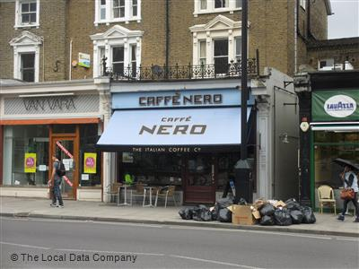
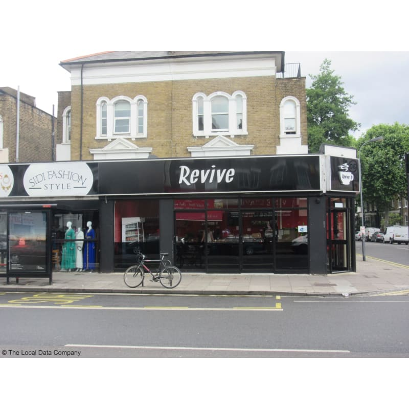
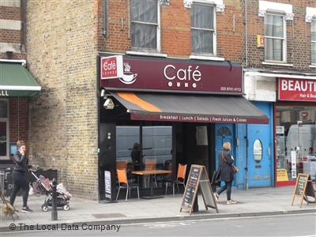

Caffe nero
cafe nero is a well know cafe across the country, one of the big cafe chains,this one can be found in acton high street with a nice seating arranged both inside and out door allowing you to enjoy the outside air while you sip on a nice cup of tea or coffe
Tea menu
tea english breakfast price 1.65
tea earl grey price 1.65
chai latte price 2.90
caramelatte price 3.25
white chocoalate mocha price 3.00
rating 3/5
Nearest train station
The nearest train station are acton town station(underground station) and acton centrol station(overground station)
Revive cafe
Revive cafe is a local small buisness with welcomeing staff, great high quality tea with spicies and fragrance thats unique to east african culture
Tea menu
somali tea price 1.50
english breakfast tea price 1.50
chai latte price price 1.80
genger tea price price 2.00
rating 4/5
Nearest train station
Nearest train station is shephered bush market station(underground station)
the cafe lounge
The cafe lounge is another local small business that manly specialise in english breakfeast and more traditional english tea you would be use to the uk, located in the business hammersmith high street is good place to stop off to take a break from a busy shopping schedule
Tea menu
Tea price 1.00
earl grey tea price 1.80
Mint tea price 2.00
Camomille tea price 1.80
Latte price 2.00
rating 2/5
Nearest train station
The cafe lounge is located near Hammersmith train station(underground station) and on king's mall road